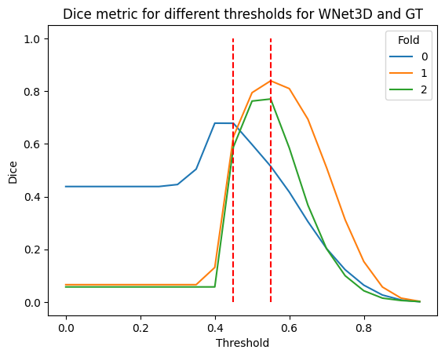
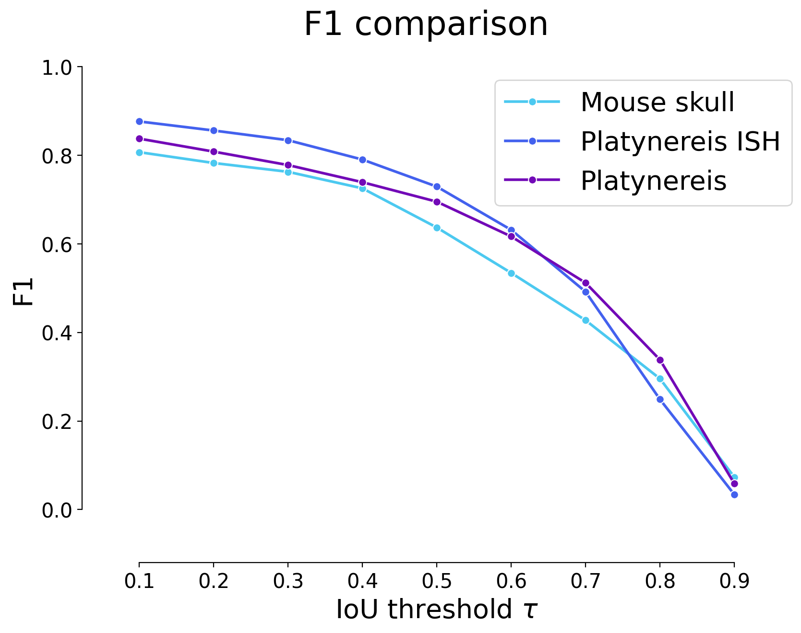
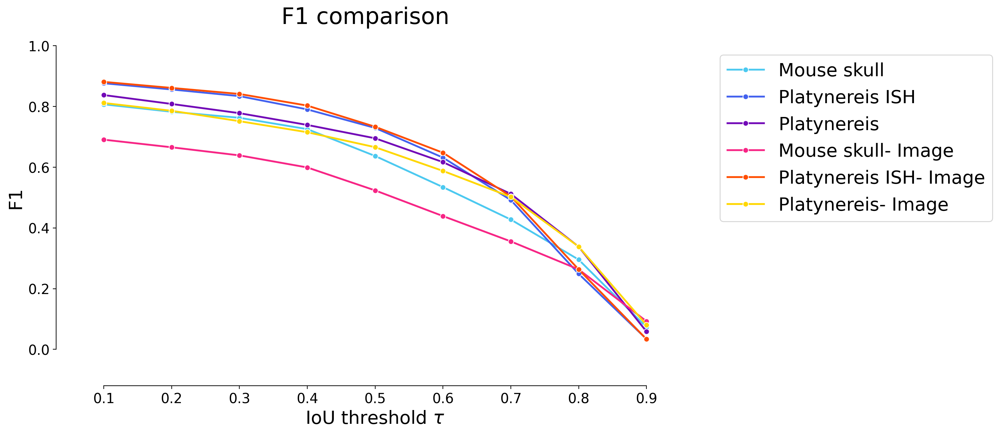

Figure 2.c : Showing qualitative WNet3D performance on additional datasets#
Show that self-supervised model can perform well on additional datasets, without requiring any additional training.
Notes for revisions:
While this was intended to provide a qualitative look at how the WNet might be helpful for other data than mesoSPIM without taking too much time and effort (using the pre-trained WNet and basic image processing methods), it seems the lack of comparison with other models, in addition to a mistake in which data was used for threshold estimation, resulted in skepticism from reviewers.
The revisions will have to address this.
import numpy as np
from tifffile import imread, imwrite
import sys
import numpy as np
import pyclesperanto_prototype as cle
from stardist.matching import matching_dataset
sys.path.append("../..")
from utils import *
from plots import *
print("Used GPU: ", cle.get_device())
show_params()
#################
SAVE_PLOTS_AS_PNG = False
SAVE_PLOTS_AS_SVG = True
Used GPU: <Intel(R) UHD Graphics 620 on Platform: Intel(R) OpenCL (1 refs)>
Plot parameters (set in plots.py) :
- COLORMAP : ████████
- DPI : 200
- Data path : C:\Users\Cyril\Desktop\Code\CELLSEG_BENCHMARK
- Font size : 20
- Title font size : 25.0
- Label font size : 20.0
%load_ext autoreload
%autoreload 2
Data#
data_path = DATA_PATH / "RESULTS/WNET OTHERS/"
# list all folders in the data path
folders = [x for x in data_path.iterdir() if x.is_dir()]
folders
[WindowsPath('C:/Users/Cyril/Desktop/Code/CELLSEG_BENCHMARK/RESULTS/WNET OTHERS/Mouse-Skull-Nuclei-CBG'),
WindowsPath('C:/Users/Cyril/Desktop/Code/CELLSEG_BENCHMARK/RESULTS/WNET OTHERS/Platynereis-ISH-Nuclei-CBG'),
WindowsPath('C:/Users/Cyril/Desktop/Code/CELLSEG_BENCHMARK/RESULTS/WNET OTHERS/Platynereis-Nuclei-CBG'),
WindowsPath('C:/Users/Cyril/Desktop/Code/CELLSEG_BENCHMARK/RESULTS/WNET OTHERS/processed_instance_labels'),
WindowsPath('C:/Users/Cyril/Desktop/Code/CELLSEG_BENCHMARK/RESULTS/WNET OTHERS/Seb cFOS')]
def get_predictions(path):
return [imread(f) for f in path.glob("*.tif")]
#################
gt_folder = "labels"
mouse_skull_gt = get_predictions(folders[0] / gt_folder)[0]
platynereis_ISH_gt = get_predictions(folders[1] / gt_folder)[0]
platynereis_gt = get_predictions(folders[2] / gt_folder)[0]
prediction_folder = "pred"
mouse_skull_pred = get_predictions(folders[0] / prediction_folder)[0]
platynereis_ISH_pred = get_predictions(folders[1] / prediction_folder)[0]
platynereis_pred = get_predictions(folders[2] / prediction_folder)[0]
# get second channel of predictions
mouse_skull_pred = mouse_skull_pred[1]
platynereis_ISH_pred = platynereis_ISH_pred[1]
platynereis_pred = platynereis_pred[1]
# get validation set to estimate thresholds
mouse_skull_val = imread(folders[0] / "TEST/X2_left_WNet3D_pred_1.tif")[1] # take channel 1 of WNet prediction (0 is background)
mouse_skull_val_gt = imread(folders[0] / "TEST/Y2_left.tif")
###
platynereis_ISH_val = imread(folders[1] / "TEST/downsampled_cropped_X02_train_WNet3D_pred.tif")[1]
platynereis_ISH_val_gt = imread(folders[1] / "TEST/downsampled_cropped_Y02_train.tif")
###
platynereis_val = imread(folders[2] / "TEST/downsampled_cropped_dataset_hdf5_150_0_WNet3D_pred_1.tif")[1]
platynereis_val_gt = imread(folders[2] / "TEST/downsampled_cropped_mask_dataset_hdf5_150_0.tif")
Computations#
Threshold predictions#
GT_labels_val = [mouse_skull_val_gt, platynereis_ISH_val_gt, platynereis_val_gt]
predictions_val = [mouse_skull_val, platynereis_ISH_val, platynereis_val]
thresh = np.arange(0, 1, 0.05)
rows = []
for t in thresh:
for i, (gt, pred) in enumerate(zip(GT_labels_val, predictions_val)):
dices_row = {"Threshold": t, "Fold": i, "Dice": dice_coeff(
np.where(gt > 0, 1, 0),
np.where(pred > t, 1, 0)
)}
rows.append(dices_row)
dices_df = pd.DataFrame(rows)
sns.lineplot(data=dices_df, x="Threshold", y="Dice", hue="Fold", palette="tab10")
plt.title("Dice metric for different thresholds for WNet3D and GT")
plt.vlines([0.45, 0.55], 0, 1, colors="red", linestyles="dashed")
plt.show()

dices_df.groupby("Threshold").mean().sort_values("Dice", ascending=False).head(5)
| Fold | Dice | |
|---|---|---|
| Threshold | ||
| 0.50 | 1.0 | 0.717895 |
| 0.55 | 1.0 | 0.708049 |
| 0.45 | 1.0 | 0.631312 |
| 0.60 | 1.0 | 0.603701 |
| 0.65 | 1.0 | 0.455269 |
predictions = [mouse_skull_pred, platynereis_ISH_pred, platynereis_pred]
GT_labels = [mouse_skull_gt, platynereis_ISH_gt, platynereis_gt]
predictions_thresholded = []
thresholds = [0.45, 0.55, 0.55]
for i, pred in enumerate(predictions):
predictions_thresholded.append(np.where(pred > thresholds[i], 1, 0))
mouse_skull_instance = np.array(
cle.voronoi_otsu_labeling(predictions_thresholded[0], outline_sigma=1, spot_sigma=15)
)
platynereis_ISH_instance = np.array(
cle.voronoi_otsu_labeling(predictions_thresholded[1], outline_sigma=0.5, spot_sigma=2)
)
platynereis_instance = np.array(
cle.voronoi_otsu_labeling(predictions_thresholded[2], outline_sigma=0.5, spot_sigma=2.75)
)
Additional mouse skull postprocessing#
mouse_skull_instance = np.array(cle.closing_labels(mouse_skull_instance, radius=8))
def remap_image(image, new_min=1, new_max=100):
min_val = image.min()
max_val = image.max()
return (image - min_val) / (max_val - min_val) * (new_max - new_min) + new_min
mouse_skull_remap = remap_image(mouse_skull_pred)
mouse_skull_instance = cle.merge_labels_with_border_intensity_within_range(
image=mouse_skull_remap,
labels=mouse_skull_instance.astype(np.int32),
minimum_intensity=35,
maximum_intensity=100
)
mouse_skull_instance = np.array(mouse_skull_instance)
_generate_touch_mean_intensity_matrix.py (30): generate_touch_mean_intensity_matrix is supposed to work with images of integer type only.
Loss of information is possible when passing non-integer images.
_opencl_execute.py (281): overflow encountered in cast
# import napari
# viewer = napari.Viewer()
# viewer.add_image(predictions_thresholded[0], colormap="turbo")
# viewer.add_labels(mouse_skull_instance)
# viewer.add_labels(mouse_skull_instance, name="mouse_skull_instance_closed")
# viewer.add_image(mouse_skull_remap, name="mouse_skull_pred_remap", colormap="turbo")
# viewer.add_labels(mouse_skull_instance, name="mouse_skull_instance_closed_merged")
# Show the predictions and the instance segmentation
# import napari
# viewer = napari.Viewer()
# viewer.add_image(predictions_thresholded[0], name="mouse_skull_pred", colormap="turbo")
# viewer.add_labels(mouse_skull_instance, name="mouse_skull_instance")
# viewer.add_image(predictions_thresholded[1], name="platynereis_ISH_pred", colormap="turbo")
# viewer.add_labels(platynereis_ISH_instance, name="platynereis_ISH_instance")
# viewer.add_image(predictions_thresholded[2], name="platynereis_pred", colormap="turbo")
# viewer.add_labels(platynereis_instance, name="platynereis_instance")
Plots#
predictions = [
mouse_skull_instance,
platynereis_ISH_instance,
platynereis_instance,
]
GT_labels = [
mouse_skull_gt,
platynereis_ISH_gt,
platynereis_gt,
]
names = [
"Mouse skull",
"Platynereis ISH",
"Platynereis",
]
# save instance labels
for pred, name in zip(predictions, names):
save_path = data_path / "processed_instance_labels"
save_path.mkdir(exist_ok=True)
imwrite(save_path / f"{name}.tif", pred.astype(np.uint32))
taus = [0.1, 0.2, 0.3, 0.4, 0.5, 0.6, 0.7, 0.8, 0.9]
model_stats = []
names_stats = []
for i, p in enumerate(predictions):
print(f"Validating on {names[i]}")
stats = [matching_dataset(
GT_labels[i],
p,
thresh=t,
show_progress=False
) for t in taus]
model_stats.append(stats)
for t in taus:
names_stats.append(names[i])
# uncomment for ALL plots :
plot_performance(taus, stats, name=names[i])
print("*"*20)
Validating on Mouse skull
********************
Validating on Platynereis ISH
********************
Validating on Platynereis
********************
dfs = [dataset_matching_stats_to_df(s) for s in model_stats]
df = pd.concat(dfs)
df["Dataset"] = names_stats
df
| criterion | fp | tp | fn | precision | recall | accuracy | f1 | n_true | n_pred | mean_true_score | mean_matched_score | panoptic_quality | by_image | Dataset | |
|---|---|---|---|---|---|---|---|---|---|---|---|---|---|---|---|
| thresh | |||||||||||||||
| 0.1 | iou | 1096 | 4061 | 845 | 0.787473 | 0.827762 | 0.676608 | 0.807115 | 4906 | 5157 | 0.558399 | 0.674588 | 0.544470 | False | Mouse skull |
| 0.2 | iou | 1219 | 3938 | 968 | 0.763622 | 0.802691 | 0.642939 | 0.782669 | 4906 | 5157 | 0.555335 | 0.691842 | 0.541483 | False | Mouse skull |
| 0.3 | iou | 1319 | 3838 | 1068 | 0.744231 | 0.782307 | 0.616546 | 0.762794 | 4906 | 5157 | 0.550126 | 0.703209 | 0.536404 | False | Mouse skull |
| 0.4 | iou | 1507 | 3650 | 1256 | 0.707776 | 0.743987 | 0.569156 | 0.725430 | 4906 | 5157 | 0.536541 | 0.721169 | 0.523158 | False | Mouse skull |
| 0.5 | iou | 1952 | 3205 | 1701 | 0.621485 | 0.653282 | 0.467337 | 0.636987 | 4906 | 5157 | 0.495302 | 0.758175 | 0.482948 | False | Mouse skull |
| 0.6 | iou | 2468 | 2689 | 2217 | 0.521427 | 0.548104 | 0.364660 | 0.534433 | 4906 | 5157 | 0.437325 | 0.797887 | 0.426417 | False | Mouse skull |
| 0.7 | iou | 3006 | 2151 | 2755 | 0.417103 | 0.438443 | 0.271866 | 0.427507 | 4906 | 5157 | 0.365661 | 0.834001 | 0.356541 | False | Mouse skull |
| 0.8 | iou | 3670 | 1487 | 3419 | 0.288346 | 0.303098 | 0.173391 | 0.295538 | 4906 | 5157 | 0.263805 | 0.870361 | 0.257225 | False | Mouse skull |
| 0.9 | iou | 4789 | 368 | 4538 | 0.071359 | 0.075010 | 0.037958 | 0.073139 | 4906 | 5157 | 0.069084 | 0.920993 | 0.067361 | False | Mouse skull |
| 0.1 | iou | 532 | 2484 | 168 | 0.823607 | 0.936652 | 0.780151 | 0.876500 | 2652 | 3016 | 0.630515 | 0.673159 | 0.590023 | False | Platynereis ISH |
| 0.2 | iou | 590 | 2426 | 226 | 0.804377 | 0.914781 | 0.748304 | 0.856034 | 2652 | 3016 | 0.627286 | 0.685722 | 0.587002 | False | Platynereis ISH |
| 0.3 | iou | 652 | 2364 | 288 | 0.783820 | 0.891403 | 0.715496 | 0.834157 | 2652 | 3016 | 0.621627 | 0.697358 | 0.581706 | False | Platynereis ISH |
| 0.4 | iou | 776 | 2240 | 412 | 0.742706 | 0.844646 | 0.653442 | 0.790402 | 2652 | 3016 | 0.605176 | 0.716485 | 0.566312 | False | Platynereis ISH |
| 0.5 | iou | 949 | 2067 | 585 | 0.685345 | 0.779412 | 0.574007 | 0.729358 | 2652 | 3016 | 0.575968 | 0.738978 | 0.538980 | False | Platynereis ISH |
| 0.6 | iou | 1226 | 1790 | 862 | 0.593501 | 0.674962 | 0.461578 | 0.631616 | 2652 | 3016 | 0.518761 | 0.768578 | 0.485446 | False | Platynereis ISH |
| 0.7 | iou | 1622 | 1394 | 1258 | 0.462202 | 0.525641 | 0.326158 | 0.491884 | 2652 | 3016 | 0.421467 | 0.801816 | 0.394401 | False | Platynereis ISH |
| 0.8 | iou | 2311 | 705 | 1947 | 0.233753 | 0.265837 | 0.142051 | 0.248765 | 2652 | 3016 | 0.226469 | 0.851910 | 0.211925 | False | Platynereis ISH |
| 0.9 | iou | 2920 | 96 | 2556 | 0.031830 | 0.036199 | 0.017229 | 0.033874 | 2652 | 3016 | 0.033264 | 0.918915 | 0.031128 | False | Platynereis ISH |
| 0.1 | iou | 58 | 800 | 252 | 0.932401 | 0.760456 | 0.720721 | 0.837696 | 1052 | 858 | 0.525770 | 0.691387 | 0.579173 | False | Platynereis |
| 0.2 | iou | 86 | 772 | 280 | 0.899767 | 0.733840 | 0.678383 | 0.808377 | 1052 | 858 | 0.521990 | 0.711313 | 0.575009 | False | Platynereis |
| 0.3 | iou | 115 | 743 | 309 | 0.865967 | 0.706274 | 0.636675 | 0.778010 | 1052 | 858 | 0.514955 | 0.729115 | 0.567259 | False | Platynereis |
| 0.4 | iou | 152 | 706 | 346 | 0.822844 | 0.671103 | 0.586379 | 0.739267 | 1052 | 858 | 0.502527 | 0.748808 | 0.553569 | False | Platynereis |
| 0.5 | iou | 194 | 664 | 388 | 0.773893 | 0.631179 | 0.532905 | 0.695288 | 1052 | 858 | 0.484465 | 0.767556 | 0.533672 | False | Platynereis |
| 0.6 | iou | 269 | 589 | 463 | 0.686480 | 0.559886 | 0.445874 | 0.616754 | 1052 | 858 | 0.445128 | 0.795033 | 0.490340 | False | Platynereis |
| 0.7 | iou | 369 | 489 | 563 | 0.569930 | 0.464829 | 0.344124 | 0.512042 | 1052 | 858 | 0.383217 | 0.824425 | 0.422140 | False | Platynereis |
| 0.8 | iou | 535 | 323 | 729 | 0.376457 | 0.307034 | 0.203529 | 0.338220 | 1052 | 858 | 0.264275 | 0.860736 | 0.291118 | False | Platynereis |
| 0.9 | iou | 802 | 56 | 996 | 0.065268 | 0.053232 | 0.030205 | 0.058639 | 1052 | 858 | 0.048994 | 0.920388 | 0.053970 | False | Platynereis |
plot_stat_comparison(taus=taus, stats_list=model_stats, model_names=names, metric="IoU", plt_size=(9, 6))
if SAVE_PLOTS_AS_PNG:
plt.savefig("f1_comparison.png")
if SAVE_PLOTS_AS_SVG:
plt.savefig("f1_comparison.svg", bbox_inches='tight')

Sanity check : Images only (no WNet)#
The aim here is to check that using the WNet does provide a benefit over using Otsu thresholding and Voronoi-based instance segmentation directly on the images.
mouse_skull_image = imread(folders[0] / "X1.tif")
platynereis_ISH_image = imread(folders[1] / "X01_cropped_downsampled.tif")
platynereis_image = imread(folders[2] / "downsmapled_cropped_dataset_hdf5_100_0.tif")
mouse_skull_instance = np.array(
cle.voronoi_otsu_labeling(mouse_skull_image, outline_sigma=1, spot_sigma=15)
)
platynereis_ISH_instance = np.array(
cle.voronoi_otsu_labeling(platynereis_ISH_image, outline_sigma=0.5, spot_sigma=2)
)
platynereis_instance = np.array(
cle.voronoi_otsu_labeling(platynereis_image, outline_sigma=0.5, spot_sigma=2.75)
)
mouse_skull_instance = np.array(cle.closing_labels(mouse_skull_instance, radius=8))
def remap_image(image, new_min=1, new_max=100):
min_val = image.min()
max_val = image.max()
return (image - min_val) / (max_val - min_val) * (new_max - new_min) + new_min
mouse_skull_remap = remap_image(mouse_skull_image)
mouse_skull_instance = cle.merge_labels_with_border_intensity_within_range(
image=mouse_skull_remap,
labels=mouse_skull_instance.astype(np.int32),
minimum_intensity=35,
maximum_intensity=100
)
mouse_skull_instance = np.array(mouse_skull_instance)
_generate_touch_mean_intensity_matrix.py (30): generate_touch_mean_intensity_matrix is supposed to work with images of integer type only.
Loss of information is possible when passing non-integer images.
_opencl_execute.py (281): overflow encountered in cast
predictions_images_only = [
mouse_skull_instance,
platynereis_ISH_instance,
platynereis_instance,
]
taus = [0.1, 0.2, 0.3, 0.4, 0.5, 0.6, 0.7, 0.8, 0.9]
model_stats_images_only = []
names_stats = []
for i, p in enumerate(predictions_images_only):
print(f"Validating on {names[i]}")
stats = [matching_dataset(
GT_labels[i],
p,
thresh=t,
show_progress=False
) for t in taus]
model_stats_images_only.append(stats)
for t in taus:
names_stats.append(names[i]+"- Image")
# uncomment for ALL plots :
plot_performance(taus, stats, name=names[i]+"- Image only")
print("*"*20)
Validating on Mouse skull
********************
Validating on Platynereis ISH
********************
Validating on Platynereis
********************
dfs = [dataset_matching_stats_to_df(s) for s in model_stats_images_only]
df_im_only = pd.concat(dfs)
df_im_only["Dataset"] = names_stats
df_all = pd.concat([df, df_im_only])
df_all
| criterion | fp | tp | fn | precision | recall | accuracy | f1 | n_true | n_pred | mean_true_score | mean_matched_score | panoptic_quality | by_image | Dataset | |
|---|---|---|---|---|---|---|---|---|---|---|---|---|---|---|---|
| thresh | |||||||||||||||
| 0.1 | iou | 1096 | 4061 | 845 | 0.787473 | 0.827762 | 0.676608 | 0.807115 | 4906 | 5157 | 0.558399 | 0.674588 | 0.544470 | False | Mouse skull |
| 0.2 | iou | 1219 | 3938 | 968 | 0.763622 | 0.802691 | 0.642939 | 0.782669 | 4906 | 5157 | 0.555335 | 0.691842 | 0.541483 | False | Mouse skull |
| 0.3 | iou | 1319 | 3838 | 1068 | 0.744231 | 0.782307 | 0.616546 | 0.762794 | 4906 | 5157 | 0.550126 | 0.703209 | 0.536404 | False | Mouse skull |
| 0.4 | iou | 1507 | 3650 | 1256 | 0.707776 | 0.743987 | 0.569156 | 0.725430 | 4906 | 5157 | 0.536541 | 0.721169 | 0.523158 | False | Mouse skull |
| 0.5 | iou | 1952 | 3205 | 1701 | 0.621485 | 0.653282 | 0.467337 | 0.636987 | 4906 | 5157 | 0.495302 | 0.758175 | 0.482948 | False | Mouse skull |
| 0.6 | iou | 2468 | 2689 | 2217 | 0.521427 | 0.548104 | 0.364660 | 0.534433 | 4906 | 5157 | 0.437325 | 0.797887 | 0.426417 | False | Mouse skull |
| 0.7 | iou | 3006 | 2151 | 2755 | 0.417103 | 0.438443 | 0.271866 | 0.427507 | 4906 | 5157 | 0.365661 | 0.834001 | 0.356541 | False | Mouse skull |
| 0.8 | iou | 3670 | 1487 | 3419 | 0.288346 | 0.303098 | 0.173391 | 0.295538 | 4906 | 5157 | 0.263805 | 0.870361 | 0.257225 | False | Mouse skull |
| 0.9 | iou | 4789 | 368 | 4538 | 0.071359 | 0.075010 | 0.037958 | 0.073139 | 4906 | 5157 | 0.069084 | 0.920993 | 0.067361 | False | Mouse skull |
| 0.1 | iou | 532 | 2484 | 168 | 0.823607 | 0.936652 | 0.780151 | 0.876500 | 2652 | 3016 | 0.630515 | 0.673159 | 0.590023 | False | Platynereis ISH |
| 0.2 | iou | 590 | 2426 | 226 | 0.804377 | 0.914781 | 0.748304 | 0.856034 | 2652 | 3016 | 0.627286 | 0.685722 | 0.587002 | False | Platynereis ISH |
| 0.3 | iou | 652 | 2364 | 288 | 0.783820 | 0.891403 | 0.715496 | 0.834157 | 2652 | 3016 | 0.621627 | 0.697358 | 0.581706 | False | Platynereis ISH |
| 0.4 | iou | 776 | 2240 | 412 | 0.742706 | 0.844646 | 0.653442 | 0.790402 | 2652 | 3016 | 0.605176 | 0.716485 | 0.566312 | False | Platynereis ISH |
| 0.5 | iou | 949 | 2067 | 585 | 0.685345 | 0.779412 | 0.574007 | 0.729358 | 2652 | 3016 | 0.575968 | 0.738978 | 0.538980 | False | Platynereis ISH |
| 0.6 | iou | 1226 | 1790 | 862 | 0.593501 | 0.674962 | 0.461578 | 0.631616 | 2652 | 3016 | 0.518761 | 0.768578 | 0.485446 | False | Platynereis ISH |
| 0.7 | iou | 1622 | 1394 | 1258 | 0.462202 | 0.525641 | 0.326158 | 0.491884 | 2652 | 3016 | 0.421467 | 0.801816 | 0.394401 | False | Platynereis ISH |
| 0.8 | iou | 2311 | 705 | 1947 | 0.233753 | 0.265837 | 0.142051 | 0.248765 | 2652 | 3016 | 0.226469 | 0.851910 | 0.211925 | False | Platynereis ISH |
| 0.9 | iou | 2920 | 96 | 2556 | 0.031830 | 0.036199 | 0.017229 | 0.033874 | 2652 | 3016 | 0.033264 | 0.918915 | 0.031128 | False | Platynereis ISH |
| 0.1 | iou | 58 | 800 | 252 | 0.932401 | 0.760456 | 0.720721 | 0.837696 | 1052 | 858 | 0.525770 | 0.691387 | 0.579173 | False | Platynereis |
| 0.2 | iou | 86 | 772 | 280 | 0.899767 | 0.733840 | 0.678383 | 0.808377 | 1052 | 858 | 0.521990 | 0.711313 | 0.575009 | False | Platynereis |
| 0.3 | iou | 115 | 743 | 309 | 0.865967 | 0.706274 | 0.636675 | 0.778010 | 1052 | 858 | 0.514955 | 0.729115 | 0.567259 | False | Platynereis |
| 0.4 | iou | 152 | 706 | 346 | 0.822844 | 0.671103 | 0.586379 | 0.739267 | 1052 | 858 | 0.502527 | 0.748808 | 0.553569 | False | Platynereis |
| 0.5 | iou | 194 | 664 | 388 | 0.773893 | 0.631179 | 0.532905 | 0.695288 | 1052 | 858 | 0.484465 | 0.767556 | 0.533672 | False | Platynereis |
| 0.6 | iou | 269 | 589 | 463 | 0.686480 | 0.559886 | 0.445874 | 0.616754 | 1052 | 858 | 0.445128 | 0.795033 | 0.490340 | False | Platynereis |
| 0.7 | iou | 369 | 489 | 563 | 0.569930 | 0.464829 | 0.344124 | 0.512042 | 1052 | 858 | 0.383217 | 0.824425 | 0.422140 | False | Platynereis |
| 0.8 | iou | 535 | 323 | 729 | 0.376457 | 0.307034 | 0.203529 | 0.338220 | 1052 | 858 | 0.264275 | 0.860736 | 0.291118 | False | Platynereis |
| 0.9 | iou | 802 | 56 | 996 | 0.065268 | 0.053232 | 0.030205 | 0.058639 | 1052 | 858 | 0.048994 | 0.920388 | 0.053970 | False | Platynereis |
| 0.1 | iou | 930 | 3079 | 1827 | 0.768022 | 0.627599 | 0.527587 | 0.690746 | 4906 | 4009 | 0.417881 | 0.665842 | 0.459927 | False | Mouse skull- Image |
| 0.2 | iou | 1042 | 2967 | 1939 | 0.740085 | 0.604770 | 0.498823 | 0.665620 | 4906 | 4009 | 0.415167 | 0.686488 | 0.456940 | False | Mouse skull- Image |
| 0.3 | iou | 1161 | 2848 | 2058 | 0.710402 | 0.580514 | 0.469425 | 0.638923 | 4906 | 4009 | 0.409135 | 0.704780 | 0.450301 | False | Mouse skull- Image |
| 0.4 | iou | 1338 | 2671 | 2235 | 0.666251 | 0.544435 | 0.427771 | 0.599215 | 4906 | 4009 | 0.396264 | 0.727845 | 0.436135 | False | Mouse skull- Image |
| 0.5 | iou | 1675 | 2334 | 2572 | 0.582190 | 0.475744 | 0.354657 | 0.523612 | 4906 | 4009 | 0.365215 | 0.767671 | 0.401962 | False | Mouse skull- Image |
| 0.6 | iou | 2052 | 1957 | 2949 | 0.488152 | 0.398899 | 0.281259 | 0.439035 | 4906 | 4009 | 0.323102 | 0.809983 | 0.355611 | False | Mouse skull- Image |
| 0.7 | iou | 2424 | 1585 | 3321 | 0.395360 | 0.323074 | 0.216235 | 0.355580 | 4906 | 4009 | 0.273659 | 0.847047 | 0.301193 | False | Mouse skull- Image |
| 0.8 | iou | 2835 | 1174 | 3732 | 0.292841 | 0.239299 | 0.151660 | 0.263376 | 4906 | 4009 | 0.210670 | 0.880362 | 0.231867 | False | Mouse skull- Image |
| 0.9 | iou | 3597 | 412 | 4494 | 0.102769 | 0.083979 | 0.048453 | 0.092428 | 4906 | 4009 | 0.077364 | 0.921231 | 0.085148 | False | Mouse skull- Image |
| 0.1 | iou | 383 | 2390 | 262 | 0.861882 | 0.901207 | 0.787479 | 0.881106 | 2652 | 2773 | 0.612524 | 0.679671 | 0.598862 | False | Platynereis ISH- Image |
| 0.2 | iou | 437 | 2336 | 316 | 0.842409 | 0.880845 | 0.756232 | 0.861198 | 2652 | 2773 | 0.609594 | 0.692056 | 0.595997 | False | Platynereis ISH- Image |
| 0.3 | iou | 491 | 2282 | 370 | 0.822935 | 0.860483 | 0.726058 | 0.841290 | 2652 | 2773 | 0.604571 | 0.702595 | 0.591087 | False | Platynereis ISH- Image |
| 0.4 | iou | 595 | 2178 | 474 | 0.785431 | 0.821267 | 0.670773 | 0.802949 | 2652 | 2773 | 0.590669 | 0.719217 | 0.577494 | False | Platynereis ISH- Image |
| 0.5 | iou | 784 | 1989 | 663 | 0.717274 | 0.750000 | 0.578871 | 0.733272 | 2652 | 2773 | 0.558883 | 0.745177 | 0.546417 | False | Platynereis ISH- Image |
| 0.6 | iou | 1016 | 1757 | 895 | 0.633610 | 0.662519 | 0.479008 | 0.647742 | 2652 | 2773 | 0.510833 | 0.771046 | 0.499439 | False | Platynereis ISH- Image |
| 0.7 | iou | 1406 | 1367 | 1285 | 0.492968 | 0.515460 | 0.336865 | 0.503963 | 2652 | 2773 | 0.414491 | 0.804119 | 0.405246 | False | Platynereis ISH- Image |
| 0.8 | iou | 2059 | 714 | 1938 | 0.257483 | 0.269231 | 0.151560 | 0.263226 | 2652 | 2773 | 0.229082 | 0.850875 | 0.223972 | False | Platynereis ISH- Image |
| 0.9 | iou | 2682 | 91 | 2561 | 0.032816 | 0.034314 | 0.017060 | 0.033548 | 2652 | 2773 | 0.031596 | 0.920800 | 0.030891 | False | Platynereis ISH- Image |
| 0.1 | iou | 58 | 758 | 294 | 0.928922 | 0.720532 | 0.682883 | 0.811563 | 1052 | 816 | 0.500484 | 0.694603 | 0.563714 | False | Platynereis- Image |
| 0.2 | iou | 82 | 734 | 318 | 0.899510 | 0.697719 | 0.647266 | 0.785867 | 1052 | 816 | 0.497073 | 0.712426 | 0.559872 | False | Platynereis- Image |
| 0.3 | iou | 114 | 702 | 350 | 0.860294 | 0.667300 | 0.602058 | 0.751606 | 1052 | 816 | 0.489355 | 0.733335 | 0.551179 | False | Platynereis- Image |
| 0.4 | iou | 148 | 668 | 384 | 0.818627 | 0.634981 | 0.556667 | 0.715203 | 1052 | 816 | 0.478119 | 0.752965 | 0.538523 | False | Platynereis- Image |
| 0.5 | iou | 194 | 622 | 430 | 0.762255 | 0.591255 | 0.499197 | 0.665953 | 1052 | 816 | 0.458364 | 0.775240 | 0.516273 | False | Platynereis- Image |
| 0.6 | iou | 267 | 549 | 503 | 0.672794 | 0.521863 | 0.416224 | 0.587794 | 1052 | 816 | 0.420096 | 0.804993 | 0.473170 | False | Platynereis- Image |
| 0.7 | iou | 347 | 469 | 583 | 0.574755 | 0.445817 | 0.335239 | 0.502141 | 1052 | 816 | 0.370229 | 0.830449 | 0.417003 | False | Platynereis- Image |
| 0.8 | iou | 500 | 316 | 736 | 0.387255 | 0.300380 | 0.203608 | 0.338330 | 1052 | 816 | 0.260545 | 0.867385 | 0.293462 | False | Platynereis- Image |
| 0.9 | iou | 741 | 75 | 977 | 0.091912 | 0.071293 | 0.041829 | 0.080300 | 1052 | 816 | 0.065537 | 0.919260 | 0.073816 | False | Platynereis- Image |
plot_stat_comparison(taus=taus, stats_list=model_stats+model_stats_images_only, model_names=df_all.Dataset.unique(), metric="IoU")
